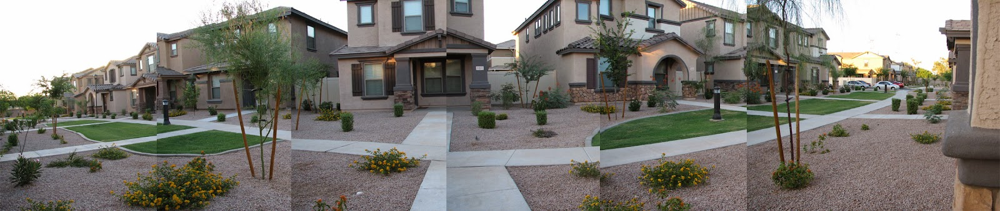
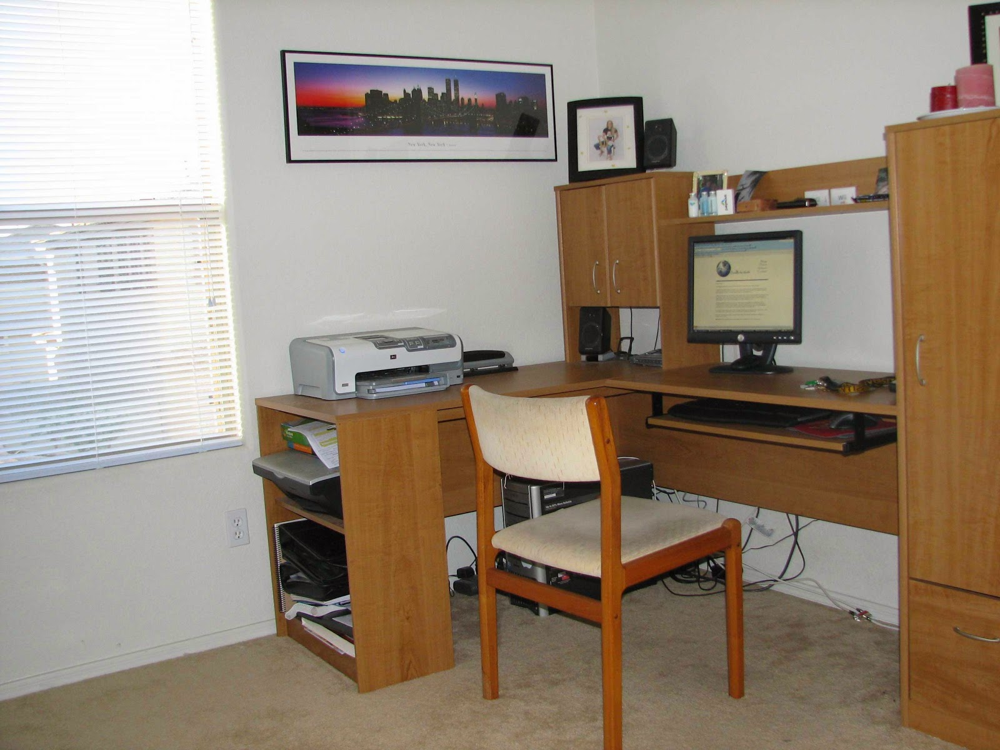
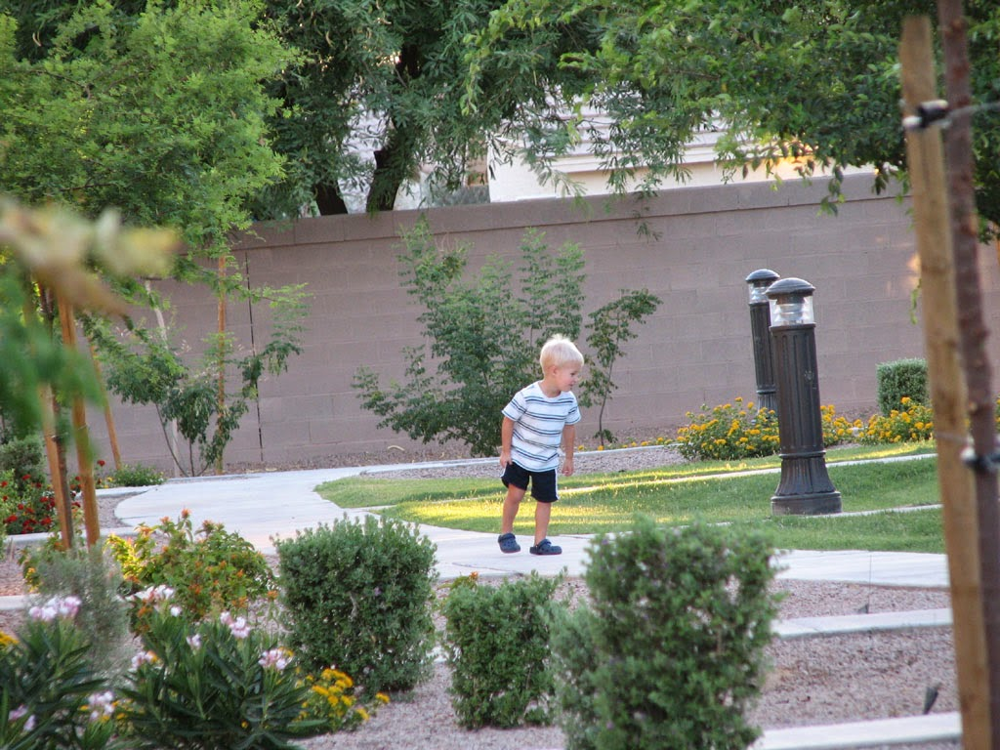

Recovered weblog entry
Pano
As a matter of fact, yes, I was putting the Web site off for quite a few days. Why do you ask?
I'm still coming to grips with the new design. I do not know whether it holds any particular aesthetic value or not, and the lengthier column makes me feel as if I haven't typed nearly as much material. I am tempted to beat my hands against the keyboard in a chaotic fashion to pound out meaningless drivel.
Overall, I feel the page to be quite boring; it holds nothing of value to me, so it might be gone/changed soon. Below this entry you'll notice a new linkable calendar that I whipped up (ie, divided one table 30 times, whoopee!), but I quickly realized after creating it that I only create entries once per week at the moment. 25 out of 30 links now become useless! That is, unless I write everyday. I have a few ideas for that, too.
It's been a pretty fine month of June so far, though the days recently passed have brought much higher temperatures than in the beginning of the month. Late in May, we bought the wife a new bike complete with a secondary seat for the little one. We've wanted to ride bikes again for years, but some other priority seemingly stood in the way. But we finally did it, and it was perfect weather in the evening times.
We haven't ridden in about a week or so now. Reason? The temps rose 20 degrees in the sundown hours. That's just enough to make me think twice about the whole affair, at least until the monsoons hit.
But! It will be a riding night tonight. Armed with water bottles and a stubborn constitution, we will enjoy our outdoors time, by gosh.
Side note: the boy just waddled up to me and asked me if he could give me a hug. I love Sundays.
Just for fun, how about a chopped up panoramic view of my front yard!

And maybe a little more fun? A picture of where the magic begins.

A picture of Sumner out in front of our house

Well, now I'm just doing the Web equivalent of bashing my hands against the keys, so I'll stop for now. The nightly bike ride may have just been postponed due to inclement bad child health; my wife just asked if we could give Sumner Pepto-Bismol. That's usually not a good sign of things to come. Have a great day!